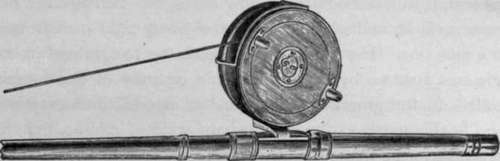
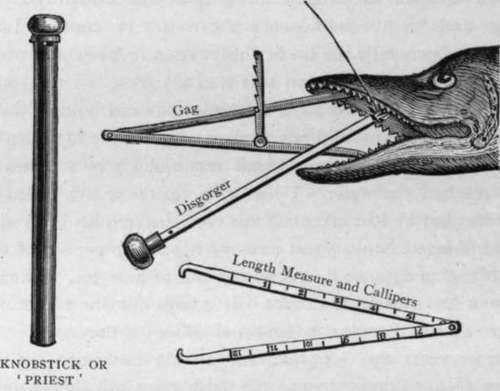

From Land And Pier. Part 3
Description
This section is from the book "Sea Fishing", by John Bickerdyke. Also available from Amazon: Sea Fishing.
From Land And Pier. Part 3
If the reel is entirely of wood it should be taken to pieces, and either carefully painted inside with two coats of enamel paint or smothered with vaseline. Otherwise the salt water, which drips into and all over it from the long wet line, will be certain to cause the wood to swell and stick. If either of these precautions is omitted, and there is a stoppage, the best thing to do is to take the reel to pieces, wash it well in fresh water, and dry it slowly in a warm airy place in the house.
Sun Reel—line Guard.
Next rub down the parts which touch with sand or glass paper until the winder will revolve freely. Then possibly vaseline or enamel may be thought desirable to prevent a recurrence of the bother. Steel screws, springs, etc, are quite inadmissible on a reel for sea work. I have mentioned several of these matters in the following chapter, but they are sufficiently important to bear repetition.
Of all lines, I personally give the preference to a twisted silk Nottingham pike line ; but it must be borne in mind that this can only be used by those who have mastered the art of casting from the reel; for if the twisted line (unless it has been dressed) be drawn in by the hand and allowed to fall in coils on the ground, it will certainly kink and entangle. Perhaps the beginner will be well advised to use an ordinary eight-plait dressed silk pike line. He can then cast from the reel, or cast in the Thames fashion, by simply having a quantity of line loosely coiled on the ground. When he has at odd times practised and finally mastered the Nottingham style of casting, then he can take to the twisted, undressed Nottingham lines, which are not only cheaper than the plaited, but stronger and best suited for that method of angling. Of course, where the fish run very small, lighter lines than those I have recommended may be used.
Among the sundry impedimenta, the most necessary is a long-handled gaff. For large fish a roomy creel will, I hope, be found useful ; at any rate, it will carry the lunch, and, if it be constructed after the pattern of my own, is a useful seat.
When fishing from rocks and piers it is very necessary to have something at hand with which to kill the fish as soon as caught, particularly eels, otherwise they are apt to slip back into the water. The most annoying incident of the kind that ever occurred to me was not in salt water, but in fresh. The story is worth telling on account of the remarkable sagacity and determination exhibited by a pound trout. I had been casting down a small stream which ran into a Sutherlandshire loch, and had caught this solitary fish. I then removed my shoes and stockings, waded into the loch as far as I dared, leaving my creel with the fish in it on the shore, about ten yards from the water's edge. The trout were rising pretty freely, and what with them, and the midges which formed a black band round each leg between the water-line and my rolled-up knickerbockers, I gave little attention to things on shore. Hearing a slight noise behind me, I looked round and saw the lid of the creel spring up and then fall back again. The trout had evidently given a leap and hit the basketwork above it. It continued its efforts, and presently the lid flew right open. A second or two later out jumped the fish on to the sandy shore. I was some little distance out in the loch, catching trout and holding them in my landing net, so did not think it worth while to return to the bank after this runaway, which very quickly by a series of leaps reached the water. I had, as a matter of fact, called to the gillie, but he had taken off his coat, covered his head with it, and plunged into a great mass of heather to get out of the way of the midges, so he pretended not to hear me. Moral : kill your fish as soon as caught. It is both humane and profitable to do so. Employ midge-proof gillies ; if they exist.
Some years ago I worked out a little instrument in the nature of a ' Priest,' to use the Irish term, which not only slew the fish, but held his mouth open, took out the hook, and measured him when all was over. We have not yet arrived at the stage when sea fish under certain limits of size have to be returned by the angler, though certain limitations have been here and there placed upon netsmen ; so the measure need not count, but the other instruments are useful. In the illustration it will be seen that my own particular ' Priest' (in addition to the knobstick which performs the last office for the dying—hence Paddy's name for it) contains a disgorger, one end being sharpened so that it can cut out the hook if need be, and also a gag which is of no small service where a conger has to be dealt with, but which at the moment is busy with a fish of some new species. This gag—an opener rather than a closure—if reversed, is serviceable as callipers for gauging the dimensions of specimen fish. The instrument, excepting the case, was at first made of steel and tinned. It rusted so quickly as to be unfit for sea or, indeed, freshwater fishing. I have now prevailed upon the makers, Warner & Sons (who shared the error so common among tackle manufacturers that tinning was a preventive of rust), to make the ' Priest' from top to toe of brass. I had one of the first made for me electro-coppered, and it answered admirably.
Next to fly fishing, the highest form of saltwater angling from rocks and piers is undoubtedly spinning for bass and pollack. The tackle is almost identical with that which we should use for pike, except that in the case of pollack the trace must be weighted heavily enough to bring the bait near the bottom, unless it be evening, when these fish rise to the surface.
Bass, on the other hand, very often feed close to the surface, not far from the shore ; so that for them little lead is necessary, only enough, indeed, to enable the angler to cast his tackle with accuracy and to a sufficient distance. I doubt if there is anything better for the trace than twisted gut. The length between the lead and the running tackle should be about eighteen inches, and between the lead and the other end of the trace three feet or a little more.
Continue to:
Tags
fishing, hooks, bait, fishermen, spanish mackerel, mackerel fishing